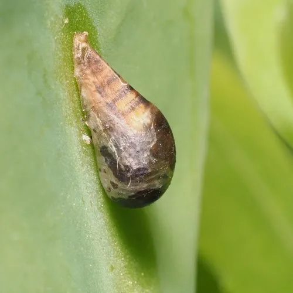

昆虫 · 动物界
黑带食蚜蝇 Episyrphus balteatus

外形酷似蜜蜂的食蚜蝇，腹部有黑黄相间横带，成虫访花传粉，幼虫捕食蚜虫，是农田重要的天敌昆虫。
- 分类
- 门节肢动物门纲昆虫纲目双翅目科食蚜蝇科属食蚜蝇属
- 栖息环境
- 农田、果园、花园、草地与林缘，成虫常在花丛间活动
- 地理分布
- 欧亚大陆和北非，中国大部分地区有分布
- 保护级别
- 暂无评估
物种志
黑带食蚜蝇成虫体长 9–12 mm，外形酷似蜜蜂。它的腹部有黑、黄、橙相间的横带，胸部呈金属光泽的暗褐色，复眼大而呈红褐色，翅透明；它只有一对翅，触角短，与蜜蜂的两对翅和长触角不同。
黑带食蚜蝇分布于欧亚大陆和北非，栖息于农田、果园、花园、草地和林缘，是常见的访花昆虫。成虫取食花蜜和花粉，是多种作物的传粉者；雌虫在蚜虫密集的植物上产卵，幼虫捕食蚜虫，一只幼虫在发育期可吃掉数百只蚜虫，因此被用于生物防治。它多在白天活动，常在花丛间悬停，雄虫有领域行为。黑带食蚜蝇每年发生多代，以幼虫或蛹越冬，是农田生态系统中重要的天敌和传粉昆虫。
形态与习性
- 食性成虫取食花蜜和花粉，幼虫捕食蚜虫
- 体长成虫 9–12 mm
- 斑纹腹部有黑、黄、橙相间横带
- 拟态外形酷似蜜蜂，但只有一对翅
- 天敌作用一只幼虫发育期可吃掉数百只蚜虫
- 活动节律白天活动，常在花间悬停
趣味知识
- 黑带食蚜蝇只有一对翅，而蜜蜂有两对翅，可借此区分。
- 它外形酷似蜜蜂，是一种典型的拟态现象。
- 一只食蚜蝇幼虫在发育期可吃掉数百只蚜虫。
- 成虫访花取食花蜜和花粉，是重要的传粉昆虫。